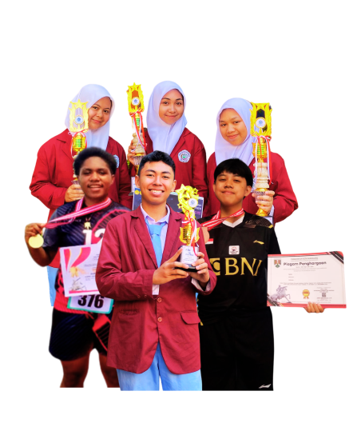

SMK Citra Medika Kota Magelang sudah berdiri sejak tahun 2012.
Memiliki dua program keahlian, yaitu: Farmasi Klinis dan Komunitas,
serta Asisten Keperawatan dan Caregiver. Visi kami adalah
"Mewujudkan Pendidikan yang Menghasilkan Sumber Daya Manusia
Terampil dan Unggul di Bidang Kesehatan, Berakhlak Mulia, serta
Berwawasan Internasional. Sejak tahun 2021, SMK Citra Medika Kota
Magelang telah menjadi
SMK Pusat Keunggulan Nasional. Jadi, tidak perlu
ragu lagi untuk bergabung menjadi bagian dari Keluarga Besar SMK
Citra Medika Kota Magelang.

Program Keahlian
Farmasi Klinis dan Komunitas
Program keahlian yang mempelajari tentang obat-obatan dan
pelayanan kefarmasian. Profil lulusan dari bidang keahlian ini
adalah menjadi asisten apoteker dan wirausaha di bidang kuliner
sehat, obat - obatan herbal, serta produk kecantikan.
Asisten Keperawatan dan Caregiver
Program keahlian yang mempelajari pelayanan dasar keperawatan
khususnya pemenuhan kebutuhan dasar manusia. Profil lulusan dari
bidang keahlian ini adalah menjadi asisten keperawatan dan
wirausaha di bidang jasa kesehatan. Selain itu, terdapat juga
program Caregiver "perawat lansia" yang akan dikirim
bekerja di Jepang.